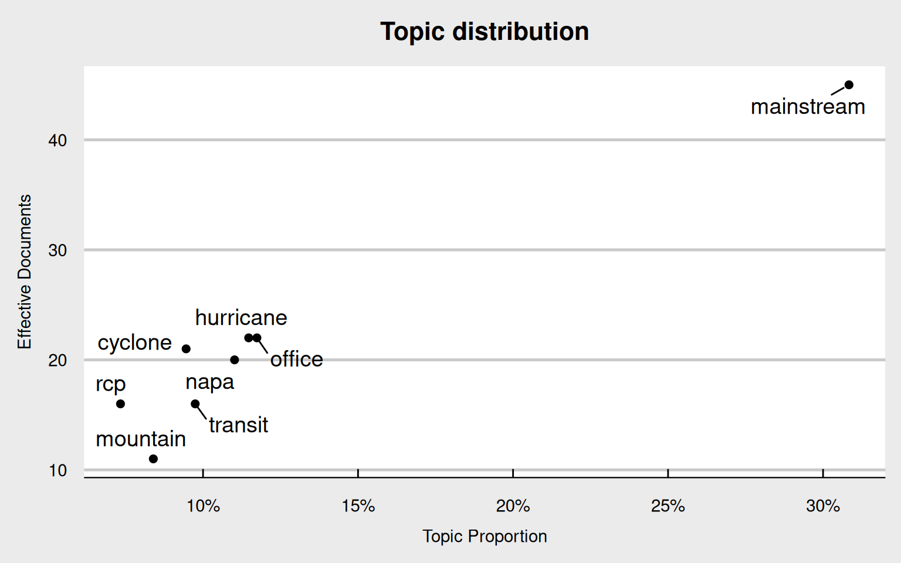
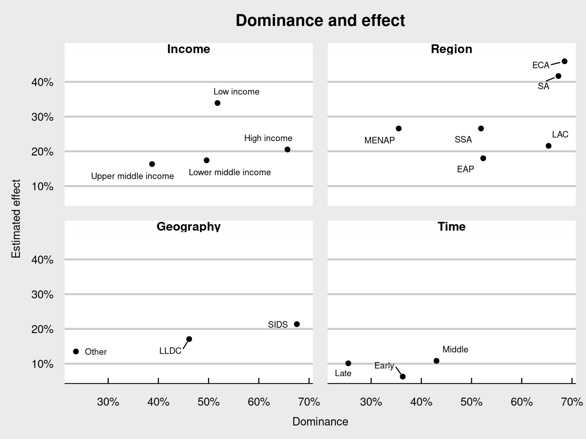
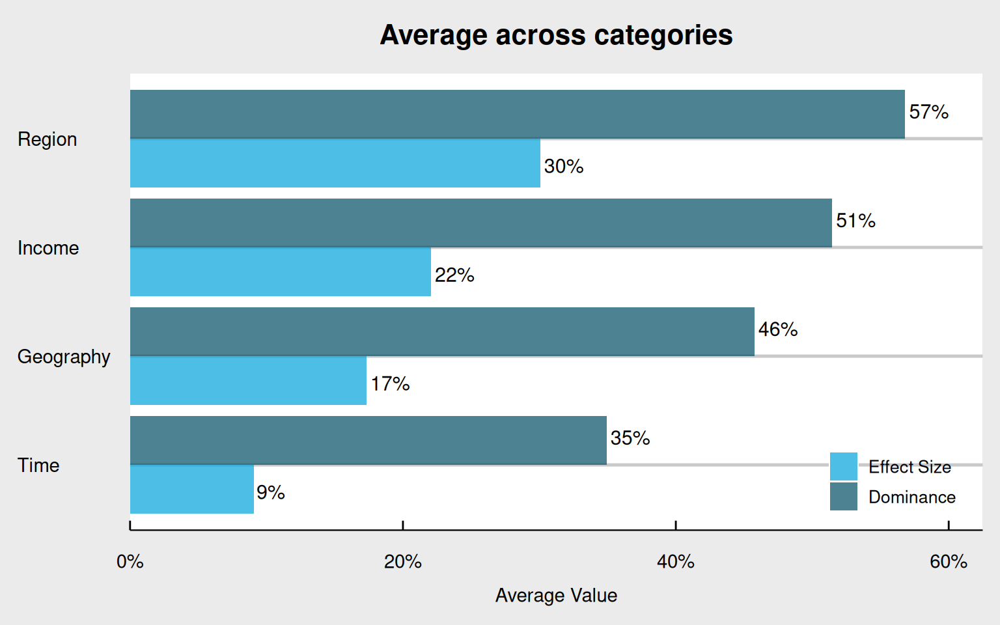

5 Findings
This chapter presents the findings from the structural topic modeling analysis of 47 National Adaptation Plans. The analysis reveals both what countries discuss when planning for climate adaptation and how membership in different categories shapes these discussions. The patterns that emerge suggest systematic constraints on adaptation discourse that operate across diverse contexts.
The chapter has in two sections. The first examines the topics identified in the topic model and the thematic structure of global adaptation discourse. The second analyzes how category membership, by income, region, geography, and time, heavily influences topic prevalence, looking at both the concentration within the top topics, as well as STM’s estimated effects.
Together, these findings reveal a paradox: despite removing the most common and rare words to focus on meaningful variation, adaptation discourse shows remarkable convergence around technical themes. This convergence varies systematically by category membership in ways that suggest institutional networks matter more than climate vulnerabilities in shaping how countries discuss adaptation.
5.1 Topics
This section examines the topics that structure global adaptation discourse. Each topic is characterized by its FREX terms, proportion of total discourse, and the countries where it features most prominently.
Mainstream (Topic 8) commands an extraordinary 31% of the entire corpus—more than triple any other topic—while appearing meaningfully in 45 of 47 national plans. The FREX terms “Mainstream, Learn, Agreement, Pari and Progress” reveal a discourse centered on planning infrastructure itself. The term mainstream signals the integration of climate considerations into existing development frameworks, while learn points to knowledge transfer mechanisms central to international climate architecture. References to the Paris Agreement (pari, agreement) situate this within global governance structures, and progress likely refers to advancement metrics required by international reporting, other towards other goal.
The Mainstream label captures how this topic represents the backbone of adaptation planning: the frameworks, agreements, and institutional arrangements that define what adaptation is, and can be. Its dominance suggests that regardless of whether countries face sea-level rise, desertification, or mountain glacial retreat, all must first engage with the technical governance language. The relationship between topic prevalence and document coverage reveals fundamental patterns in how adaptation discourse operates globally. Figure 5.1 maps each topic according to their share of total discourse (x-axis) and their presence across documents (y-axis), showing how the topics are distributed through the corpus.
The remaining topics address diverse vulnerabilities and planning dimensions, though all filtered through institutional lenses and operating at much smaller scales.
Napa (Topic 1) occupies 11% of discourse and appears meaningfully in 20 documents. It has the FREX terms “Ment, Tion, Napa, Percent and Pro” and features the most in Chad (59%), Mozambique (57%). The fragmented nature of most terms gives some doubts about the validity of the topic or as artifacts from the word-splitting that might have been in the pdfs. Ment (might be from development, management, government), Tion (adaptation, mitigation, implementation), and Pro (from project, program, process), alongside Percent still suggests that this topic captures some planning language. Only Napa provides clear thematic content, referencing the National Adaptation Programme of Action framework, the predecessor to the NAP (Mizuno and Okano 2024).
Cyclone (Topic 2) comprises 9% of the corpus, present in 21 documents, with FREX terms “Cyclon, Tropic, Decad, Sea and Rise” dominated by Philippines (49%), Tonga (31%). The coherent terminology around tropical weather systems (Cyclon, Tropic) and temporal patterns (Decad, Sea, Rise) validates this topic’s thematic integrity. The Cyclone name reflects the focus on vulnerabilities central to many coastal and island nations.
Mountain (Topic 3) represents only 8% of discourse across 11 documents, with FREX terms “Republ, Feder, Mountain, Summer and Accord” and presence in Serbia (79%), Bosnia and Herzegovina (68%). The terms mix governmental structures (Republ, Feder) with geography (Mountain), seasonality (Summer), and formal agreements (Accord). This captures federal republics discussing mountain environments and seasonal variations, and the Mountain label is appropriate.
Hurricane (Topic 4) at 11% appearing in 22 documents shows FREX terms “Marin, Island, Hurrican, Coastal and Mangrov” concentrated in Kuwait (50%), St. Lucia (46%). The marine and coastal terminology (Marin, Island, Hurrican, Coastal, Mangrov) is a coherent set of terms around coastal vulnerabilities. The Hurricane name captures this.
Office (Topic 5) constitutes 12% found in 22 documents with FREX terms “Offic, Climate-Resili, Medium, Secretariat and Depart” prominent in Bhutan (52%), Nepal (51%). The bureaucratic vocabulary (Offic, Climate-Resili, Medium, Secretariat, Depart) reveals institutional architecture considerations, with Climate-Resili suggesting these offices focus specifically on resilience building. The Office label captures this administrative focus.
Transit (Topic 6) at 10% in 16 documents with FREX terms “Transit, Task, Instrument, Indigen and Territori” dominated by Brazil (69%), Argentina (68%). The terminology spans infrastructure (Transit), planning processes (Task, Instrument), and indigenous rights (Indigen, Territori). The Transit label captures only one dimension of what appears to be a complex intersection of infrastructure development and indigenous territorial governance. Brazil and Argentina’s dominance suggests this topic reflects Latin American contexts where infrastructure projects navigate indigenous rights.
Rcp (Topic 7) comprises 7% across 16 documents with FREX terms “Rcp, Rainfal, Ensembl, Confid and Trend” appearing in West Bank and Gaza (73%), Sudan (26%). The technical climate science vocabulary (Rcp for Representative Concentration Pathways, Rainfal, Ensembl, Confid, Trend) forms the clearest thematic cluster, representing the modeling and projection work underlying vulnerability assessments. The RCP name identifies this as the technical scientific foundation of adaptation planning.
| Topic | Prop | Docs | Terms | Countries |
|---|---|---|---|---|
| Napa (Topic 1) | 11% | 20 | Ment, Tion, Napa, Percent and Pro | Chad (59%), Mozambique (57%) |
| Cyclone (Topic 2) | 9% | 21 | Cyclon, Tropic, Decad, Sea and Rise | Philippines (49%), Tonga (31%) |
| Mountain (Topic 3) | 8% | 11 | Republ, Feder, Mountain, Summer and Accord | Serbia (79%), Bosnia and Herzegovina (68%) |
| Hurricane (Topic 4) | 11% | 22 | Marin, Island, Hurrican, Coastal and Mangrov | Kuwait (50%), St. Lucia (46%) |
| Office (Topic 5) | 12% | 22 | Offic, Climate-Resili, Medium, Secretariat and Depart | Bhutan (52%), Nepal (51%) |
| Transit (Topic 6) | 10% | 16 | Transit, Task, Instrument, Indigen and Territori | Brazil (69%), Argentina (68%) |
| Rcp (Topic 7) | 7% | 16 | Rcp, Rainfal, Ensembl, Confid and Trend | West Bank and Gaza (73%), Sudan (26%) |
| Mainstream (Topic 8) | 31% | 45 | Mainstream, Learn, Agreement, Pari and Progress | Armenia (71%), Albania (64%) |
5.2 Groups
This section examines how category membership shapes adaptation discourse, showing that regional institutional networks have a much stronger influence than geography, income level, or time period.
Regional groupings demonstrate the most powerful influence on adaptation discourse, with an average effect size of 30%, much higher than income (22%), geography (17%), or time (9%). This dominance suggests that regional institutional architectures, like development banks, technical assistance programs, or consultant networks, create a convergence around climate knowledge that outweighs all the other factors.
Europe & Central Asia exhibit the strongest regional effect at 46%, nearly half the total possible effect size. Countries in this region show dominance of 69% concentrated on Mountain, Mainstream and Transit. Despite the region being very large and diverse, from EU members to Central Asian republics, these plans are very similar. The emphasis on mountain ecosystems alongside mainstream planning suggests either genuinely shared vulnerabilities or adoption of standardized regional templates and approaches-
South Asia follows with an effect size of 42%, the second highest among regions. With only four plans in the dataset, this region nonetheless shows dominance of 67% focused on Office, Mainstream and Cyclone. The concentration suggest that the nations have institutions or other shared regional resources in common.
Sub-Saharan Africa and Middle East, North Africa, Afghanistan & Pakistan both show effect sizes of 27%. Sub-Saharan Africa’s dominance of 52% through Mainstream, Napa and Office reflects the region’s longer engagement with adaptation planning through NAPA frameworks. Meanwhile, MENA’s lower dominance of 35% but equal effect size suggests that while this region explores more diverse topics, countries within it still converge strongly around Rcp, Mainstream and Transit.
The relationship between discourse dominance and group effect sizes reveals how different categorization schemes create varying levels of constraint on national adaptation planning. Figure 5.2 maps these patterns across all subcategories.

High-income countries show extreme topic concentration (66%) but moderate group effects (21%), while low-income countries display lower dominance (52%) but the highest income-group effect (34%). This suggests that discourse concentration and group conformity might not be directly related. Figure Figure 5.3 presents the aggregate patterns, confirming regional categories as the primary organizing force in global adaptation discourse.

The consistently high values across both metrics for regions, compared to the variation in other categories, reinforces that institutional geography trumps physical geography in shaping how countries articulate climate responses.
Income categories show an overall effect size of 22%, revealing counterintuitive patterns. Low-income countries demonstrate the highest effect within this category at 34%—nearly double that of upper-middle income countries (16%). This extreme convergence among poor countries, despite their geographic and climatic diversity, suggests powerful standardizing forces operate through development assistance and technical support mechanisms.
Low-income countries focus on Napa, Mainstream and Rcp with dominance of 52%. The prominence of NAPA, the old NAP process, alongside mainstream planning might reflect how these countries have been adapting for a while, or that they must demonstrate fluency in both historical and contemporary adaptation frameworks. Their limited autonomy in discourse construction likely reflects dependence on external technical assistance and the need to align with donor priorities. High-income countries show dominance of 66% concentrated on Mainstream, Hurricane and Transit, yet their effect size of 21% sits mid-range. This combination of extreme topic concentration with moderate group coherence suggests that while wealthy countries converge on certain topics, they maintain some flexibility in how they articulate them. Upper-middle income countries have the room to maneuver in their plans, with the lowest dominance (39%) and smallest effect size (16%) focused on Mainstream, Mountain and Hurricane.
Geographic vulnerability classifications show an overall effect of 17%, lower than the other categories. Countries sharing similar climate vulnerabilities show less discourse similarity than countries in the same World Bank region, challenging assumptions about environmental determinism in adaptation planning.
Small Island Developing States exhibit the highest dominance in the entire dataset at 68%, focusing on Mainstream, Hurricane and Cyclone with an effect size of 21%. This concentration seems to reflect shared threats from sea-level rise and tropical cyclones. Yet even here, Mainstream (Topic 8) dominates alongside obviously relevant island concerns, suggesting institutional requirements constrain even the most vulnerable nations. Landlocked Developing Countries show moderate patterns with dominance of 46% through Mainstream, Office and Napa and effect size of 17%. Surprisingly, all of the topics are technical and governance-related, despite the group being defined by their geography. Other countries display the lowest geographic dominance at 24% with an effect size of 14% focused on Mainstream, Transit and Napa.
The time periods have the weakest effects at 9%, suggesting adaptation discourse has not substantially evolved over the decade of NAP development. While individual periods show variation—middle period plans (2019-2021) demonstrating highest dominance at 43% focused on Mainstream, Napa and Hurricane—the overall temporal effect remains minimal.
Early submissions (2015-2018) show dominance of 36% with the lowest temporal effect of 6% on Mainstream, Hurricane and Office. Middle period submissions exhibit the highest temporal convergence at 11%, coinciding with clearer guidelines and more rigid finance requirements. Late submissions (2022-2025) display the lowest dominance at 25% but maintain substantial effect size of 10% on Mainstream, Cyclone and Office. The temporal patterns reveal no clear trajectory toward either convergence or divergence, suggesting that once established, adaptation planning frameworks persist regardless of accumulating experience or evolving climate science.
| Category | Group | Dominance | Effect | Topics |
|---|---|---|---|---|
| Income | High Income | 66% | 21% | Mainstream, Hurricane and Transit |
| Income | Upper-Middle Income | 39% | 16% | Mainstream, Mountain and Hurricane |
| Income | Lower-Middle Income | 50% | 17% | Mainstream, Office and Cyclone |
| Income | Low Income | 52% | 34% | Napa, Mainstream and Rcp |
| Region | Europe & Central Asia | 69% | 46% | Mountain, Mainstream and Transit |
| Region | Latin America & Caribbean | 65% | 22% | Mainstream, Transit and Hurricane |
| Region | South Asia | 67% | 42% | Office, Mainstream and Cyclone |
| Region | Sub-Saharan Africa | 52% | 27% | Mainstream, Napa and Office |
| Region | East Asia & Pacific | 52% | 18% | Mainstream, Cyclone and Hurricane |
| Region | MENA, Afghanistan & Pakistan | 35% | 27% | Rcp, Mainstream and Transit |
| Geography | Small Island Developing States | 68% | 21% | Mainstream, Hurricane and Cyclone |
| Geography | Landlocked Developing Countries | 46% | 17% | Mainstream, Office and Napa |
| Geography | Other | 24% | 14% | Mainstream, Transit and Napa |
| Time | Early (2015-2018) | 36% | 6% | Mainstream, Hurricane and Office |
| Time | Middle (2019-2021) | 43% | 11% | Mainstream, Napa and Hurricane |
| Time | Late (2022-2025) | 25% | 10% | Mainstream, Cyclone and Office |